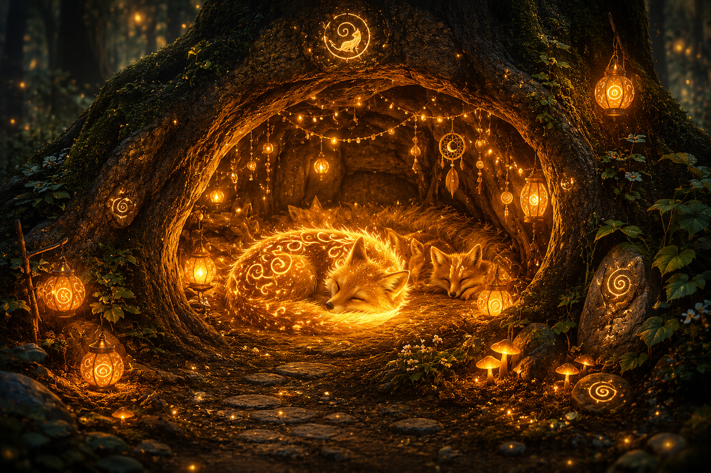
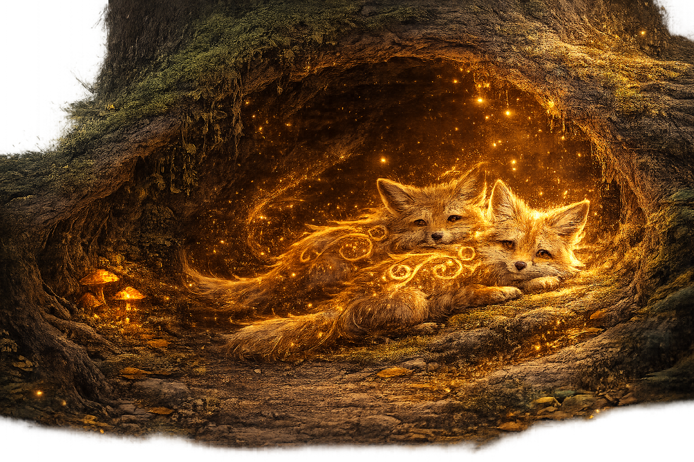
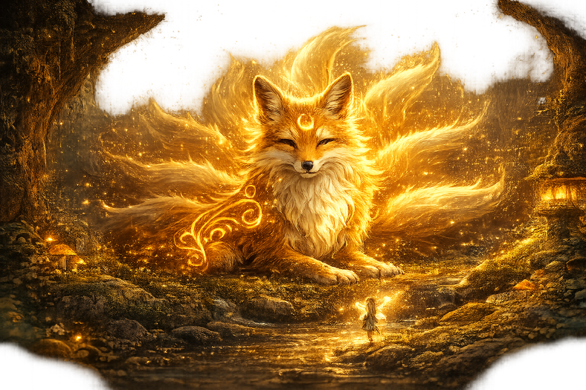

Level: 3
Points: 0
Fox Spirits Returned: 0/5
Move: Arrow Keys
Befriend/Return Fox: F
Level 3
The Lost Fox Spirits
Find one fox spirit at a time.
Press F to befriend it.
Guide it to the den.
Press F again to return it home.



Level 3 — The Lost Fox Spirits. Walk near the fox and press F.